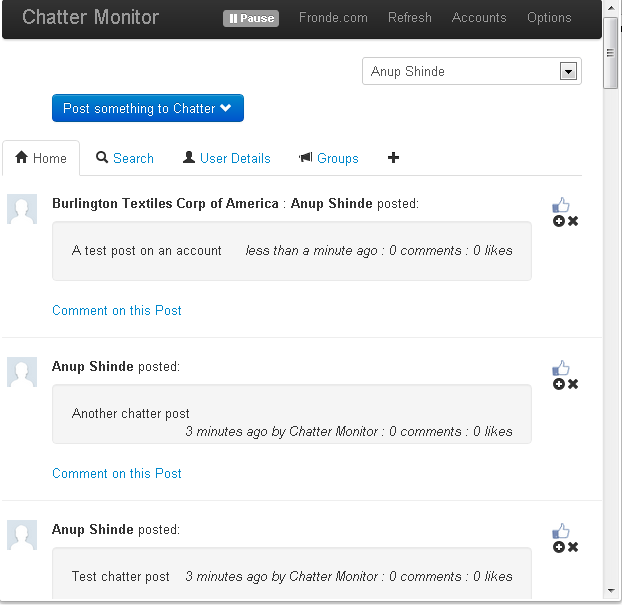

Google Chrome extension for Chatter (Salesforce) frees you from having to login to see your Chatter feed and is an excellent non-intrusive replacement for Chatter Desktop. This extension also supports viewing poll results and allows voting in polls - while this is not available in the official Chatter Desktop. It’s a great app for people who work out of the browser all day. This one also does not require you to install Adobe air and simply works on Chrome browser.

Once an account is added, this extension does not interfere with Salesforce logins - in case you have other browser based logins for other requirements. This application implements the OAuth2 to authorize the accounts and request for necessary permissions - This means that the extension directly connects with Salesforce and not through a third party mechanism
While adding an account you need to logout of your existing Salesforce account (unless that's the one you want to use). After adding an account it does not interfere with Salesforce sessions. You also need Chatter Connect API is not enabled for this organization or user type.
Also it is possible to add multiple Salesforce accounts to this extension - Unfortunately, the extension does not consolidate the feeds from multiple logins.
At the start when adding an user-account - it does feel a bit clunky - but later on its a smooth ride.
This extension can be installed from Chrome Webstore - here
Happy Chattering